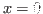
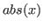
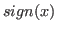
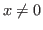
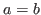

4.3 Expressions
Dynare distinguishes between two types of mathematical expressions:
those that are used to describe the model, and those that are used
outside the model block (e.g. for initializing parameters or
variables, or as command options). In this manual, those two types of
expressions are respectively denoted by MODEL_EXPRESSION and
EXPRESSION.
Unlike MATLAB or Octave expressions, Dynare expressions are necessarily
scalar ones: they cannot contain matrices or evaluate to
matrices1.
Expressions can be constructed using integers (INTEGER), floating
point numbers (DOUBLE), parameter names (PARAMETER_NAME),
variable names (VARIABLE_NAME), operators and functions.
The following special constants are also accepted in some contexts:
- Constant: inf
Represents infinity.
- Constant: nan
“Not a number”: represents an undefined or unrepresentable value.
4.3.1 Parameters and variables
Parameters and variables can be introduced in expressions by simply
typing their names. The semantics of parameters and variables is quite
different whether they are used inside or outside the model block.
4.3.1.1 Inside the model
Parameters used inside the model refer to the value given through
parameter initialization (see Parameter initialization) or
homotopy_setup when doing a simulation, or are the estimated
variables when doing an estimation.
Variables used in a MODEL_EXPRESSION denote current period
values when neither a lead or a lag is given. A lead or a lag can be
given by enclosing an integer between parenthesis just after the
variable name: a positive integer means a lead, a negative one means a
lag. Leads or lags of more than one period are allowed. For example, if
c is an endogenous variable, then c(+1) is the variable
one period ahead, and c(-2) is the variable two periods before.
When specifying the leads and lags of endogenous variables, it is
important to respect the following convention: in Dynare, the timing of
a variable reflects when that variable is decided. A control variable —
which by definition is decided in the current period — must have no
lead. A predetermined variable — which by definition has been decided in
a previous period — must have a lag. A consequence of this is that all
stock variables must use the “stock at the end of the period”
convention. Please refer to Mancini-Griffoli (2007) for more
details and concrete examples.
Leads and lags are primarily used for endogenous variables, but can be
used for exogenous variables. They have no effect on parameters and are
forbidden for local model variables (see Model declaration).
4.3.1.2 Outside the model
When used in an expression outside the model block, a parameter or a
variable simply refers to the last value given to that variable. More
precisely, for a parameter it refers to the value given in the
corresponding parameter initialization (see Parameter initialization); for an endogenous or exogenous variable, it refers to
the value given in the most recent initval or endval block.
4.3.2 Operators
The following operators are allowed in both MODEL_EXPRESSION and
EXPRESSION:
- binary arithmetic operators:
+, -, *, /, ^
- unary arithmetic operators:
+, -
- binary comparison operators (which evaluate to either
0 or
1): <, >, <=, >=, ==,
!=
Note that these operators are differentiable everywhere except on a
line of the 2-dimensional real plane. However for facilitating
convergence of Newton-type methods, Dynare assumes that, at the points
of non-differentiability, the partial derivatives of these operators
with respect to both arguments is equal to  (since this is the
value of the partial derivatives everywhere else).
(since this is the
value of the partial derivatives everywhere else).
The following special operators are accepted in MODEL_EXPRESSION
(but not in EXPRESSION):
- Operator: STEADY_STATE (MODEL_EXPRESSION)
This operator is used to take the value of the enclosed expression at
the steady state. A typical usage is in the Taylor rule, where you may
want to use the value of GDP at steady state to compute the output gap.
- Operator: EXPECTATION (INTEGER) (MODEL_EXPRESSION)
This operator is used to take the expectation of some expression using
a different information set than the information available at current
period. For example, EXPECTATION(-1)(x(+1)) is equal to the
expected value of variable x at next period, using the
information set available at the previous period. See Auxiliary variables, for an explanation of how this operator is handled
internally and how this affects the output.
4.3.3 Functions
4.3.3.1 Built-in Functions
The following standard functions are supported internally for both
MODEL_EXPRESSION and EXPRESSION:
- Function: exp (x)
Natural exponential.
- Function: log (x)
- Function: ln (x)
Natural logarithm.
- Function: log10 (x)
Base 10 logarithm.
- Function: sqrt (x)
Square root.
- Function: abs (x)
Absolute value.
Note that this function is not differentiable at . However,
for facilitating convergence of Newton-type methods, Dynare assumes
that the derivative at is equal to (this
assumption comes from the observation that the derivative of
 is equal to  for  and from
the convention for the derivative of at ).
- Function: sign (x)
Signum function.
Note that this function is not differentiable at . However,
for facilitating convergence of Newton-type methods, Dynare assumes
that the derivative at is equal to (this assumption
comes from the observation that both the right- and left-derivatives
at this point exist and are equal to ).
- Function: sin (x)
- Function: cos (x)
- Function: tan (x)
- Function: asin (x)
- Function: acos (x)
- Function: atan (x)
Trigonometric functions.
- Function: max (a, b)
- Function: min (a, b)
Maximum and minimum of two reals.
Note that these functions are differentiable everywhere except on a
line of the 2-dimensional real plane defined by . However
for facilitating convergence of Newton-type methods, Dynare assumes
that, at the points of non-differentiability, the partial derivative
of these functions with respect to the first (resp. the second)
argument is equal to  (resp. to ) (i.e. the
derivatives at the kink are equal to the derivatives observed on the
half-plane where the function is equal to its first argument).
(resp. to ) (i.e. the
derivatives at the kink are equal to the derivatives observed on the
half-plane where the function is equal to its first argument).
- Function: normcdf (x)
- Function: normcdf (x, mu, sigma)
Gaussian cumulative density function, with mean mu and standard
deviation sigma. Note that normcdf(x) is equivalent
to normcdf(x,0,1).
- Function: normpdf (x)
- Function: normpdf (x, mu, sigma)
Gaussian probability density function, with mean mu and standard
deviation sigma. Note that normpdf(x) is equivalent
to normpdf(x,0,1).
- Function: erf (x)
Gauss error function.
4.3.3.2 External Functions
Any other user-defined (or built-in) MATLAB or Octave function may be
used in both a MODEL_EXPRESSION and an EXPRESSION, provided
that this function has a scalar argument as a return value.
To use an external function in a MODEL_EXPRESSION, one must
declare the function using the external_function statement. This
is not necessary for external functions used in an EXPRESSION.
- Command: external_function (OPTIONS…);
-
Description
This command declares the external functions used in the model block. It
is required for every unique function used in the model block.
external_function commands can appear several times in the file
and must come before the model block.
Options
name = NAMEThe name of the function, which must also be the name of the M-/MEX file
implementing it. This option is mandatory.
nargs = INTEGERThe number of arguments of the function. If this option is not provided,
Dynare assumes nargs = 1.
first_deriv_provided [= NAME]If NAME is provided, this tells Dynare that the Jacobian is
provided as the only output of the M-/MEX file given as the option
argument. If NAME is not provided, this tells Dynare that the
M-/MEX file specified by the argument passed to name returns the
Jacobian as its second output argument.
second_deriv_provided [= NAME]If NAME is provided, this tells Dynare that the Hessian is
provided as the only output of the M-/MEX file given as the option
argument. If NAME is not provided, this tells Dynare that the
M-/MEX file specified by the argument passed to name returns the
Hessian as its third output argument. NB: This option can only be used
if the first_deriv_provided option is used in the same
external_function command.
Example
external_function(name = funcname);
external_function(name = otherfuncname, nargs = 2,
first_deriv_provided, second_deriv_provided);
external_function(name = yetotherfuncname, nargs = 3,
first_deriv_provided = funcname_deriv);
4.3.4 A few words of warning in stochastic context
The use of the following functions and operators is strongly
discouraged in a stochastic context: max, min,
abs, sign, <, >, <=, >=,
==, !=.
The reason is that the local approximation used by stoch_simul
or estimation will by nature ignore the non-linearities
introduced by these functions if the steady state is away from the
kink. And, if the steady state is exactly at the kink, then the
approximation will be bogus because the derivative of these functions
at the kink is bogus (as explained in the respective documentations of
these functions and operators).
Note that extended_path is not affected by this problem,
because it does not rely on a local approximation of the model.